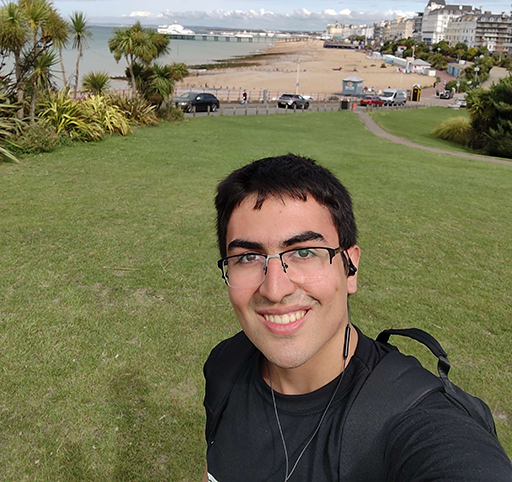
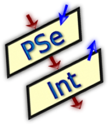

Sobre nosotros

Abel Astudillo
Me gusta la tecnología y cada vez me apasiona más el mundo de la programación. Disfruto aprender cosas nuevas, enfrentar desafíos y descubrir cómo, a través del código, se pueden transformar ideas en soluciones. Me entusiasma ver todo lo que he podido aprender y crear hasta ahora. Sé que este camino requiere paciencia, práctica y dedicación. Combinar el estudio con el trabajo no siempre es fácil, pero cada avance y cada dificultad superada me motivan a seguir creciendo. Siento que esto es apenas el comienzo y me entusiasma todo lo que todavía me queda por aprender y descubrir.
Cristian Balmaceda
Ser programador y trabajar de ello, es mi meta al futuro, trabajar duro y disfrutar del camino del aprendizaje.
Leonel Araya
Interesado en el mundo de la tecnología y la programación. Disfruto aprender cosas nuevas, resolver problemas y encontrar distintas formas de abordar un desafío.
Manuel Monsalve
What do you call a magic owl? Hoo-dini
If you wanna know more about me, check the console.
Somos ALT+F4
Somos un grupo de estudiantes de la Tecnicatura Universitaria en Programación de la UTN San Rafael, unidos por el interés por la tecnología y las ganas de aprender haciendo. Elegimos el nombre ALT+F4 como un guiño al atajo que cierra ventanas, aunque en la práctica preferimos abrir muchas más. Nos tomamos cada proyecto que realizamos como una oportunidad para experimentar y mejorar. Trabajamos en equipo priorizando la accesibilidad y la colaboración, a la vez que un código claro y escalable.
Proyectos

Proyecto Integrador en PSeInt
Una trivia de distintos temas hecho en PSeInt como práctica e introducción a la programación en el primer semestre de la tecnicatura
Portafolio Web Grupal
¡Estás aquí! Un portafolio web de nuestro grupo como práctica para las clases de GitHub. En él se hace uso de HTML, CSS y JS, implementando elementos de uso libre online (como botones).
Proyecto Integrador Java
Una reescritura de nuestro proyecto integrador en PSeInt, ahora en Java. Cuenta con POO, constantes e importaciones.
Experiencia Laboral
Estudios
UTN San Rafael - Técnicatura Universitaria en Programación - Marzo 2026 hasta Presente
Academia en la que todos estamos formándonos como programadores. Hemos visto contenido de muchas materias, entre ellas: fundamentos de la programación, programación I y II, matemática, estadística, base de datos I, etc. Actualmente estamos en primer año.
Contacto
¿Querés escribirnos? Mandanos un mail a altf4.team@example.com y te responderemos a la brevedad.